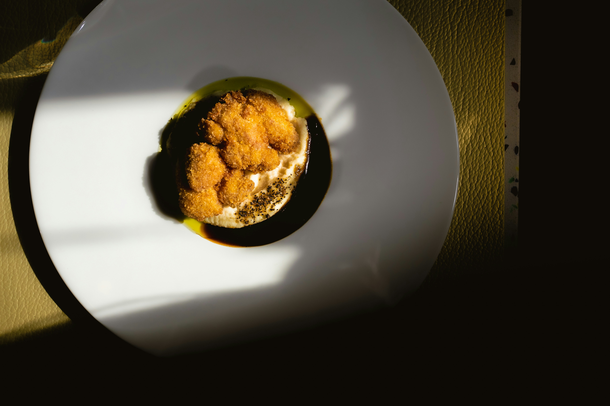

Wiener Schnitzel

The Wiener Schnitzel with potato and lamb’s lettuce salad is the epitome of Austrian culinary art and a true classic, cherished worldwide.
Ingredients
For 4 persons / 45 Minutes
- 3 piece(s) dried or hard, stale Kaiser rolls
- 4 veal schnitzels from special-fed bob veal calves, 5.5 oz. (160 g) each, a quarter inch thick (or 8 veal loin schnitzels, 3 oz. (80 g) each, a quarter inch thick). The veal should be matured for at least 2 weeks.
- 1 cup(s) all-purpose flour
- 3 eggs
- 1 cup(s)canola oil for frying
- 2 cup(s) clarified butter for frying
- 2cup(s) lard (the amount of fat always depends on the size of the pan)
- 1 lemon, untreated
- 1 1/4 cup(s) salt
Steps
- Make the breadcrumbs yourself from the dried rolls. Sift half of the breadcrumbs a little more coarsely than the other half. Then mix.
- Cover the schnitzels with cling film and flatten them slightly. Then remove the film, salt them on both sides and bread them in the Viennese style (immediately before frying): Shake off the flour well, don’t beat the eggs until uniform, and press on the breadcrumbs very lightly.
- In a tall, thick-walled pan, heat the fat mixture to approx. 285 °F (140 °C). Place the schnitzels in the pan and immediately increase the heat to up to 350 °F (180 °C), continuously swirling the pan. After the first 30 seconds, turn without piercing the meat, then continue to sauté and swirl until the schnitzel is a deep, golden yellow.
- Carefully remove the schnitzels with a spatula, allow the fat to drain and thoroughly dry off with a paper towel. Cut the lemon into 6 wedges and individually wrap them in 8 by 8 inch size lemon wraps.
- Serve with potato and lamb‘s lettuce salad
Back to recipes